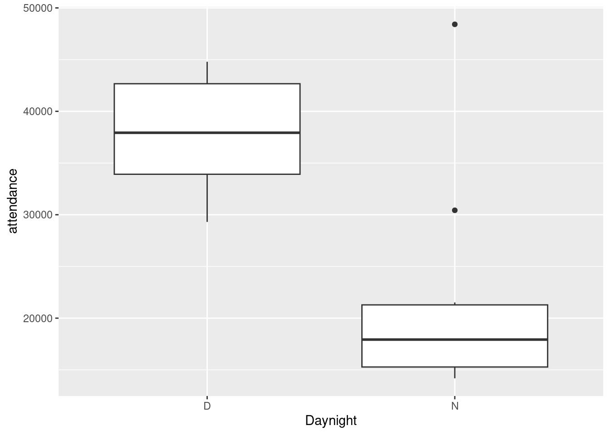
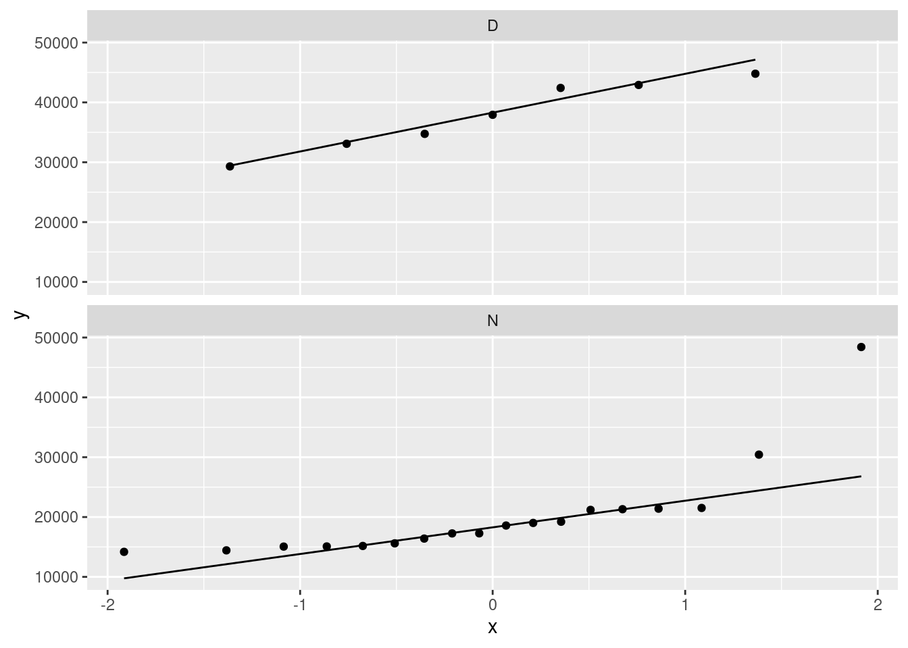
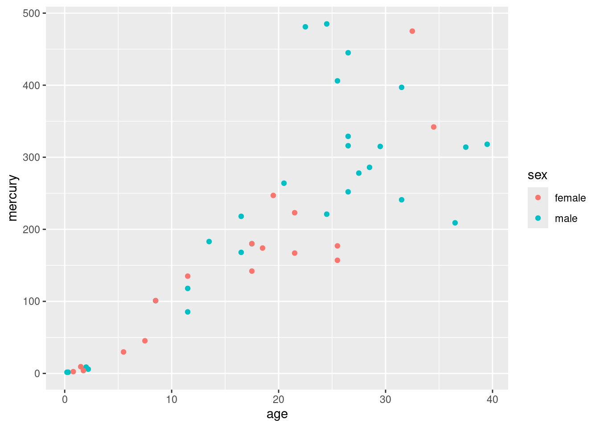
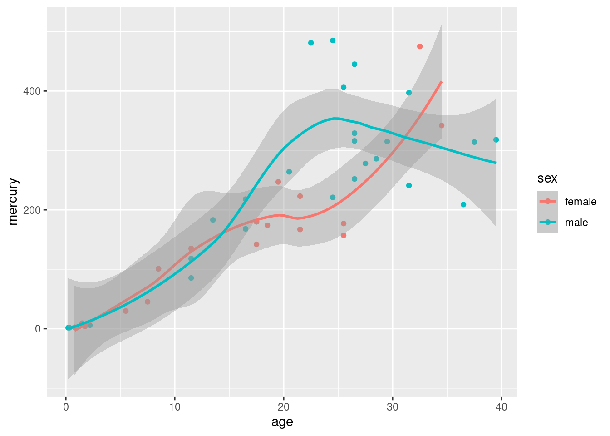

library(tidyverse)5 Working with dataframes
5.1 Tidying the Jays data
This question is about the Blue Jays data set (that I used in class).
The Blue Jays baseball data set is at link. Read it into R. Check that you have 25 rows and a bunch of variables.
Pick out only the games that were against the New York Yankees (the variable
oppis equal toNYY). Investigate all the columns. What do you notice about these games?From the whole data frame, pick out only the games where the attendance was more than 30,000, showing only the columns
attendanceandDaynight. How many of them are there (just count them)? How many are day games and how many night games (just count those too)?Display the mean and standard deviation of attendances at all day and night games.
Make normal quantile plots of the day attendances and the night attendances, separately. Do you see any evidence of non-normality? (You would expect to on the night attendances because of the big opening-night value.)
5.2 Cars
My cars data file can be found at link. The values in the data file are separated by commas; the car names are up to 29 characters long. Display your results for each part after (a). In R, displaying a tibble normally shows its first ten lines, which is all you need here; there’s no need to display all the lines.
Read the data into R and list the values.
Display only the car names and the countries they come from.
Display everything except horsepower:
Display only the cars that have 8-cylinder engines (but display all the variables for those cars).
Display the cylinders and horsepower for the cars that have horsepower 70 or less.
Find the mean and SD of gas mileage of the cars with 4 cylinders.
5.3 Dolphins
Dolphins and other large marine mammals are at the top of the marine food chain, and so if there is any heavy metal pollution in the sea, it will find its way into the dolphins. The study we look at is of the concentration of mercury. This is expected to be different in males and females because the mercury in a female is transferred to her offspring during gestation and nursing. In this study, there were 28 males and 17 females of various ages. There are three columns in the data file:
mercury, the concentration in the liver, in micrograms per gramagein yearssexof the dolphin, male or female.
The data are in http://ritsokiguess.site/datafiles/dolphins.csv as a CSV file. This question appears to have a lot of parts, but most of them ought not to take you too long.
Read in and display (some of) the data.
Display only the two columns
mercuryandsex.Display all the columns whose names have exactly three characters, without naming any columns.
Display only the mercury levels for the females.
What is the mean mercury concentration for all the dolphins whose age is less than 15?
What is the mean mercury concentration for all the dolphins whose age is greater than 25?
Make a suitable graph of these data (all three columns).
Explain briefly how your graph and your calculations of mean mercury concentration are telling a similar story.
My solutions follow:
5.4 Tidying the Jays data
This question is about the Blue Jays data set (that I used in class).
- The Blue Jays baseball data set is at link. Read it into R. Check that you have 25 rows and a bunch of variables.
Solution
Save the URL into a variable and then read from the URL, using read_csv because it’s a .csv file:
myurl <- "http://ritsokiguess.site/datafiles/jays15-home.csv"
jays <- read_csv(myurl)Rows: 25 Columns: 21
── Column specification ────────────────────────────────────────────────────────
Delimiter: ","
chr (12): date, box, team, opp, result, wl, gb, winner, loser, save, Daynig...
dbl (7): row, game, runs, Oppruns, innings, position, attendance
lgl (1): venue
time (1): game time
ℹ Use `spec()` to retrieve the full column specification for this data.
ℹ Specify the column types or set `show_col_types = FALSE` to quiet this message.jaysIf you must, copy and paste the spreadsheet into R Studio, and read it in with read_delim (or possibly read_tsv), but this runs the risk of being defeated by spreadsheet cells that contain spaces. I don’t think there are any here, but you might run into a pitcher whose name has more than one word, like (Andy) Van Hekken, who is in the Seattle Mariners farm system.1
Anyway, 25 rows and 21 columns. As usual, it’s a tibble, so you see 10 rows and as many columns as will fit. This is often enough to see whether we have the right thing (as we appear to have, here). You can run through all the columns and check that they’re the right kind of thing; most of them are text with a few numbers and one time, which is game time, the length of the game in hours and minutes, which is turned into an R time in hours, minutes and seconds.
With all those columns, read_csv doesn’t tell you what column specification it inferred for all of them, but you can type
spec(jays)cols(
row = col_double(),
game = col_double(),
date = col_character(),
box = col_character(),
team = col_character(),
venue = col_logical(),
opp = col_character(),
result = col_character(),
runs = col_double(),
Oppruns = col_double(),
innings = col_double(),
wl = col_character(),
position = col_double(),
gb = col_character(),
winner = col_character(),
loser = col_character(),
save = col_character(),
`game time` = col_time(format = ""),
Daynight = col_character(),
attendance = col_double(),
streak = col_character()
)to find it all out.
\(\blacksquare\)
- Pick out only the games that were against the New York Yankees (the variable
oppis equal toNYY). Investigate all the columns. What do you notice about these games?
Solution
This:
jays %>% filter(opp == "NYY")but you will probably need to click the little right-arrow at the top to see more columns.
What I notice is that these games are all on consecutive nights (against the same team). This is quite common, and goes back to the far-off days when teams travelled by train: teams play several games on one visit, rather than coming back many times.2 You might have noticed something else; that’s fine for this. For example, “each of the games lasted less than three hours”, or “the attendances were all small” (since we looked at all the attendances in class). I just want you to notice something meaningful that seems to be interesting about these games.
You could also print all the columns in two or more goes, using select, for example:
jays %>% filter(opp == "NYY") %>% select(row:innings)jays %>% filter(opp == "NYY") %>% select(wl:streak)\(\blacksquare\)
- From the whole data frame, pick out only the games where the attendance was more than 30,000, showing only the columns
attendanceandDaynight. How many of them are there (just count them)? How many are day games and how many night games (just count those too)?
Solution
Two steps, since we selecting rows and columns.
jays %>%
filter(attendance > 30000) %>%
select(c(attendance, Daynight))Or this way, since we are selecting consecutive columns:
jays %>%
filter(attendance > 30000) %>%
select(c(Daynight:attendance))There are eight games selected (see the eight rows in the result). Only two of them are night games, while the other six are day (weekend) games.
If you wanted to, you could automate the counting, like this:
jays %>%
filter(attendance > 30000) %>%
count(Daynight)Six day games and two night games.
\(\blacksquare\)
- Display the mean and standard deviation of attendances at all day and night games.
Solution
Two steps: the grouping according to what I want to group by, then summarizing according to what I want to summarize by. Since I am summarizing, only the summaries find their way into the final data frame, so I don’t need to “select out” the other variables:
jays %>%
group_by(Daynight) %>%
summarize(
mean.att = mean(attendance),
sd.att = sd(attendance)
)The mean attendances are about 38 thousand and about 20 thousand. Note that the night games have much the larger SD, possibly because of the large outlier night attendance (opening night). Which we can also investigate.
jays %>%
group_by(Daynight) %>%
summarize(
median.att = median(attendance),
iqr.att = IQR(attendance)
)This time, the night attendances have a smaller spread and a noticeably smaller median (compared to the mean), so it must have been the outlier that made the difference. There was another high value that R marked as an outlier:
ggplot(jays, aes(x = Daynight, y = attendance)) + geom_boxplot()
So when you take away those unusual values, the night game attendances are indeed less variable.
Extra: looking ahead, nhe right test, for comparing the medians of these non-normal data, is Mood’s median test:
library(smmr)
median_test(jays, attendance, Daynight)$grand_median
[1] 21195
$table
above
group above below
D 7 0
N 5 12
$test
what value
1 statistic 9.882352941
2 df 1.000000000
3 P-value 0.001668714There was one attendance exactly equal to the overall median (as you would expect: with an odd number of data values, the median is one of the data values). smmr removed it; if you did the test by hand, what happens to it depends on whether you counted aboves or belows, and this will have a small effect on the P-value, though not on the conclusion.
The overall median attendance was 21,000, and none of the day games had attendance less than that. With the small frequencies, the accuracy of the P-value is a bit questionable, but taking it at face value, there is a significant difference between median attendances at day and night games.3
\(\blacksquare\)
- (optional for now, but useful for laterW) Make normal quantile plots of the day attendances and the night attendances, separately. Do you see any evidence of non-normality? (You would expect to on the night attendances because of the big opening-night value.)
Solution
The best way to do this is facetted normal quantile plots. Remember that the facetting part goes right at the end:
ggplot(jays, aes(sample = attendance)) +
stat_qq() + stat_qq_line() +
facet_wrap(~Daynight, ncol = 1)
The day attendances are pretty normal, though it is hard to be sure with only 7 of them.
The night attendances are not normal. The lone point top right is the outlier. On top of that, the lowest attendances are not quite low enough and the second-highest attendance is a bit too high, so there is a bit of evidence of right-skewness as well as just the one outlier.
If you leave out the ncol=1, you’ll get the two normal quantile plots side by side (which means that each one is tall and skinny, and thus hard to read). The ncol=1 displays all the facets in one column, and though it would be nice to have the graphs be about square, landscape mode is easier to read than portrait mode.
One of the reasons for skewness is often a limit on the values of the variable. The Rogers Centre has a capacity around 55,000. The day game attendances don’t get especially close to that, which suggests that everyone who wants to go to the game can get a ticket. In that sort of situation, you’d expect attendances to vary around a “typical” value, with a random deviation that depends on things like the weather and the opposing team, which is the typical situation in which you get bell-shaped data. (If the Jays often sold out their stadium for day games, you’d see a lot of attendances close to the capacity, with a few lower: ie., a left skew.)
As for the night games, well, there seems to be a minimum attendance that the Blue Jays get, somewhere around 15,000: no matter who they’re playing or what the weather’s like, this many people will show up (season-ticket holders, for example). On special occasions, such as opening night, the attendance will be much bigger, which points to a right skew.
\(\blacksquare\)
5.5 Cars
My cars data file can be found at link. The values in the data file are separated by commas; the car names are up to 29 characters long. Display your results for each part after (a). In R, displaying a tibble normally shows its first ten lines, which is all you need here; there’s no need to display all the lines.
- Read the data into R and list the values.
Solution
read_csv will do it:
my_url <- "http://ritsokiguess.site/datafiles/cars.csv"
cars <- read_csv(my_url)Rows: 38 Columns: 6
── Column specification ────────────────────────────────────────────────────────
Delimiter: ","
chr (2): car, country
dbl (4): MPG, weight, cylinders, hp
ℹ Use `spec()` to retrieve the full column specification for this data.
ℹ Specify the column types or set `show_col_types = FALSE` to quiet this message.cars\(\blacksquare\)
- Display only the car names and the countries they come from.
Solution
cars %>% select(car, country)This almost works, but not quite:
cars %>% select(starts_with("c"))It gets all the columns that start with c, which includes cylinders as well.
\(\blacksquare\)
- Display everything except horsepower:
Solution
Naming what you don’t want is sometimes easier:
cars %>% select(-hp)\(\blacksquare\)
- Display only the cars that have 8-cylinder engines (but display all the variables for those cars).
Solution
This:
cars %>% filter(cylinders == 8)8 of them, all from the US.
\(\blacksquare\)
- Display the cylinders and horsepower for the cars that have horsepower 70 or less.
Solution
This one is selecting some observations and some variables:
cars %>% filter(hp <= 70) %>% select(cylinders:hp)Cylinders and horsepower are consecutive columns, so we can select them either using the colon : or by c(cylinders,hp).
You can also do the filter and the select the other way around. This one works because the rows you want to choose are determined by a column you’re going to keep. If you wanted to display the cylinders and horsepower of the cars with mpg over 30, you would have to choose the rows first, because after you’ve chosen the columns, there is no mpg any more.
\(\blacksquare\)
- Find the mean and SD of gas mileage of the cars with 4 cylinders.
Solution
cars %>% filter(cylinders == 4) %>% summarize(m = mean(MPG), s = sd(MPG))Or you can get the mean and SD of gas mileage for all numbers of cylinders, and pick out the one you want:
cars %>% group_by(cylinders) %>% summarize(m = mean(MPG), s = sd(MPG))Top row is the same as before. And since the output is a data frame, you can do any of these things with that, for example:
cars %>%
group_by(cylinders) %>%
summarize(m = mean(MPG), s = sd(MPG)) %>%
filter(cylinders == 4)to pick out just the right row. This is a very easy kind of question to set on an exam. Just so you know.
\(\blacksquare\)
5.6 Dolphins
Dolphins and other large marine mammals are at the top of the marine food chain, and so if there is any heavy metal pollution in the sea, it will find its way into the dolphins. The study we look at is of the concentration of mercury. This is expected to be different in males and females because the mercury in a female is transferred to her offspring during gestation and nursing. In this study, there were 28 males and 17 females of various ages. There are three columns in the data file:
mercury, the concentration in the liver, in micrograms per gramagein yearssexof the dolphin, male or female.
The data are in http://ritsokiguess.site/datafiles/dolphins.csv as a CSV file. This question appears to have a lot of parts, but most of them ought not to take you too long.
- Read in and display (some of) the data.
Solution
Exactly the usual:
my_url <- "http://ritsokiguess.site/datafiles/dolphins.csv"
dolphins <- read_csv(my_url)Rows: 45 Columns: 3
── Column specification ────────────────────────────────────────────────────────
Delimiter: ","
chr (1): sex
dbl (2): mercury, age
ℹ Use `spec()` to retrieve the full column specification for this data.
ℹ Specify the column types or set `show_col_types = FALSE` to quiet this message.dolphinsThere are indeed 45 dolphins, with the males listed first and the females listed at the end (as you can check).
\(\blacksquare\)
- Display only the two columns
mercuryandsex.
Solution
Two ways to do it: either list both columns:
dolphins %>% select(mercury, sex)or say “everything but age”:
dolphins %>% select(-age)The second one is easier coding, so is better.
Note that mercury:sex won’t do it, because that will get you age as well (“mercury through sex”).
\(\blacksquare\)
- Display all the columns whose names have exactly three characters, without naming any columns.
Solution
Evidently this is age and sex. We are selecting columns on the basis of their names, so we will need a select-helper. The one that works is matches with a regular expression. This is like the one in the lecture notes where we selected height and weight by selecting columns whose names had two letters and the second one was “t”. In this case, the three letters can be anything, so it’s three dots between the start of text and end of text:
dolphins %>%
select(matches("^...$"))\(\blacksquare\)
- Display only the mercury levels for the females.
Solution
This is selecting rows and columns, so you’ll have a select and a filter. If you do the select first, you’ll only have the mercury levels left, and you won’t know which dolphins are female. So do the filter first:
dolphins %>% filter(sex == "female") %>%
select(mercury)\(\blacksquare\)
- What is the mean mercury concentration for all the dolphins whose age is less than 15?
Solution
Grab only the dolphins with age less than 15 first, and then work out their mean mercury with summarize:
dolphins %>% filter(age<15) %>%
summarize(m = mean(mercury))55.5 (micrograms per gram), as you should say.
Another way is to define a new column that indicates whether the age is less than 15 or not, and do group-by and summarize:
dolphins %>%
mutate(young = ifelse(age<15, "yes", "no")) %>%
group_by(young) %>%
summarize(m = mean(mercury))Here, you definitely need to extract the right number out of the output. You can also define groups by logical condition directly, which saves you a step:
dolphins %>%
group_by(age<15) %>%
summarize(m = mean(mercury))Doing it this way, you are probably getting some suspicions about the relationship between age and mercury concentration, but that’s coming up.
\(\blacksquare\)
- What is the mean mercury concentration for all the dolphins whose age is greater than 25?
Solution
The same three choices of method:
dolphins %>% filter(age>25) %>%
summarize(m = mean(mercury))309.2 (micrograms per gram), as you should say.
Or define a new column:
dolphins %>%
mutate(young = ifelse(age>25, "yes", "no")) %>%
group_by(young) %>%
summarize(m = mean(mercury))Or:
dolphins %>%
group_by(age>25) %>%
summarize(m = mean(mercury))In any of these ways, 309.2 micrograms per gram.
\(\blacksquare\)
- Make a suitable graph of these data (all three columns).
Solution
This one ought to be a gimme, but I am using the result in the next part. With two quantitative variables and one categorical, a scatterplot with the sexes indicated by colour:
ggplot(dolphins, aes(x = age, y = mercury, colour = sex)) + geom_point()
I think this is clearer without regression lines; the upward trend is clear enough, and it is not clear that the trends are linear (look at the males of the largest ages). Add a smooth trend if you like:
ggplot(dolphins, aes(x = age, y = mercury, colour = sex)) + geom_point() +
geom_smooth()`geom_smooth()` using method = 'loess' and formula = 'y ~ x'
Mercury concentration increases with age for the females, and also does with age for the males up to about age 25, after which it levels off or decreases.
\(\blacksquare\)
- Explain briefly how your graph and your calculations of mean mercury concentration are telling a similar story.
Solution
I wanted to get to a point where we were saying something interesting about the data, rather than just playing with select and friends.
The graph is showing an increasing trend of mercury concentration with age (at least, for all but the oldest males). The mean calculations are showing that the younger dolphins have a small mercury concentration on average, and the older dolphins have a much larger mean. These are both saying that mercury concentration is increasing with age, so they are consistent.
Extra:
I tried to make this fairly obvious for you by choice of age groups to compare, and this pattern holds for both males and females, so that the mean calculations didn’t need to depend on sex. But there is no great difficulty in making it work by sex as well – insert a group_by before the summarize:
dolphins %>% filter(age<15) %>%
group_by(sex) %>%
summarize(m = mean(mercury))and
dolphins %>% filter(age>25) %>%
group_by(sex) %>%
summarize(m = mean(mercury))The male means are slightly bigger in the two cases, though the difference between the sexes is small compared to the age effect. (I ran a regression predicting mercury concentration from age and sex, and the sex effect wasn’t even significant.)
A second extra: what if you wanted to divide age up into age groups for comparison of mercury concentration? This isn’t always a good idea (for reasons I get into below), but if you want to do it, cut is your friend:
dolphins %>% mutate(age_group = cut(age, breaks=c(0,15,25,60))) -> dolphinsx
dolphinsxNote that cut needs input breaks whose first value is lower than all the ages and whose last value is higher than all the ages. The age group intervals are what mathematicians would call “half-open”: the upper limit is included in the interval and the lower limit is not. The age of 15 is thus in the 0-15 interval and not in 15-25.
Now we can work out mean mercury concentration for each age group:
dolphinsx %>% group_by(age_group) %>%
summarize(m = mean(mercury))or even do it by sex as well:
dolphinsx %>% group_by(age_group, sex) %>%
summarize(m = mean(mercury))`summarise()` has grouped output by 'age_group'. You can override using the
`.groups` argument.Note that there is still no evidence here of the levelling off of the male mercury levels, which happened after age 25, and there was quite a lot of variability there as well.
My take is that if you have numerical data, that’s what you should use, rather than breaking it up into categories. Those dolphins in the 25-60 age group, we don’t know much about their actual ages, and we’ve seen that age and mercury concentration are closely related, so we are throwing away information by categorizing. Some people break things up into categories because that’s what they know how to analyze, but that is never a good reason for you: it means that you need to go learn how to handle the original quantitative data!
\(\blacksquare\)
I found this by googling, after I had scrolled past all the pages of articles about the baseball pitcher who lives in a van.↩︎
Hockey is similar: teams go on road trips, playing several different teams before returning home. Hockey teams, though, tend to play each team only once on a road trip: for example, a west coast team like the Canucks might play a game in each of Toronto, Montreal, Boston and New York on a road trip. Well, maybe three games in the New York area: one each against the Rangers, Islanders and Devils.↩︎
If you do this by hand, you’ll get a warning about the chi-squared approximation being inaccurate. This is because of the small frequencies, and not because of the outliers. Those are not damaging the test at all.↩︎